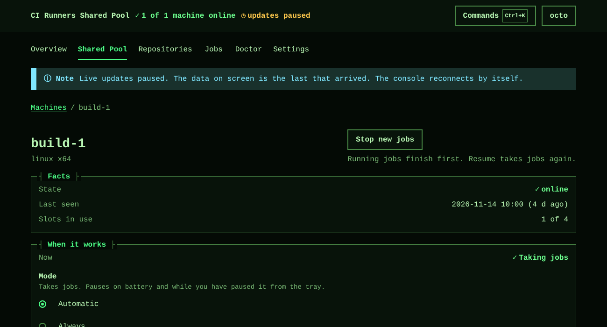
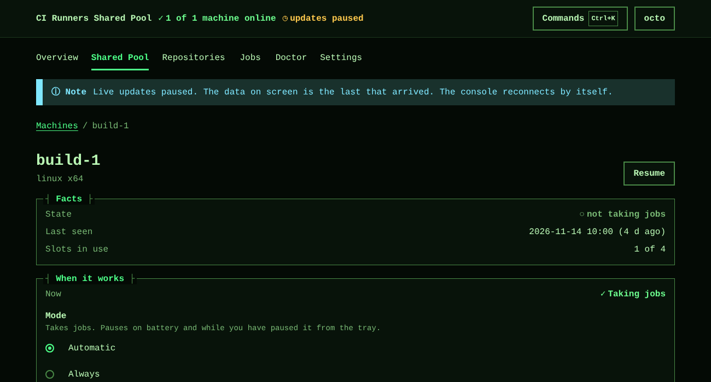
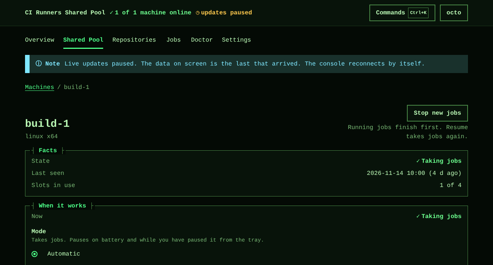
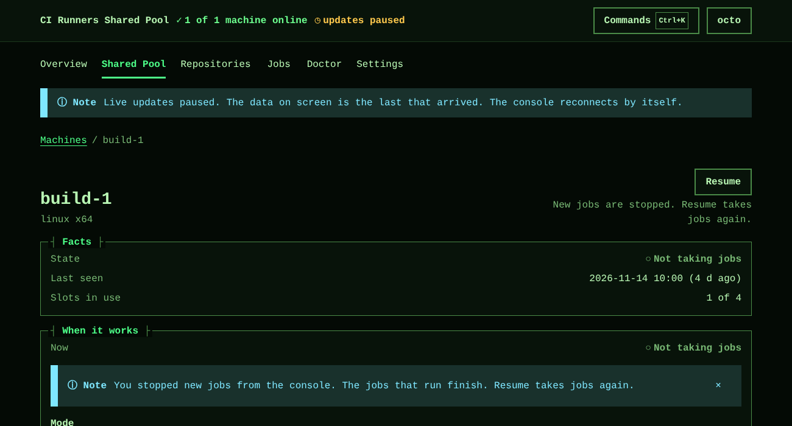

Stop new jobs and Resume are right-aligned with the hint under them; the header has the same height in both states, so the Facts box does not move. State, Now, its note and the button read one computed state.



